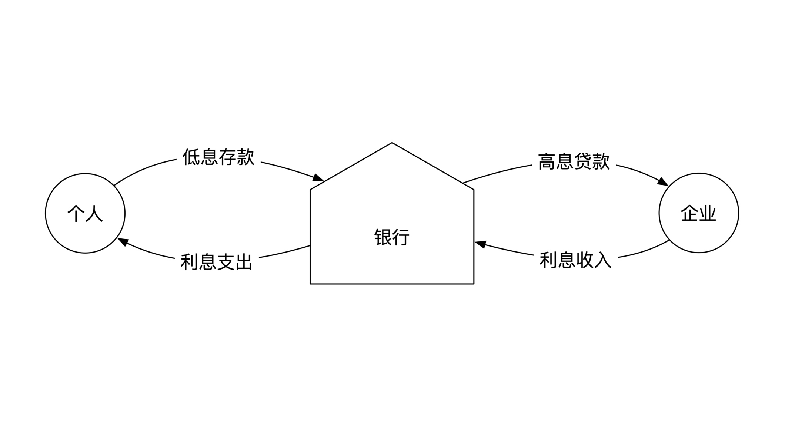
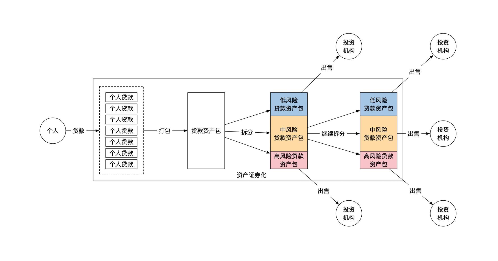
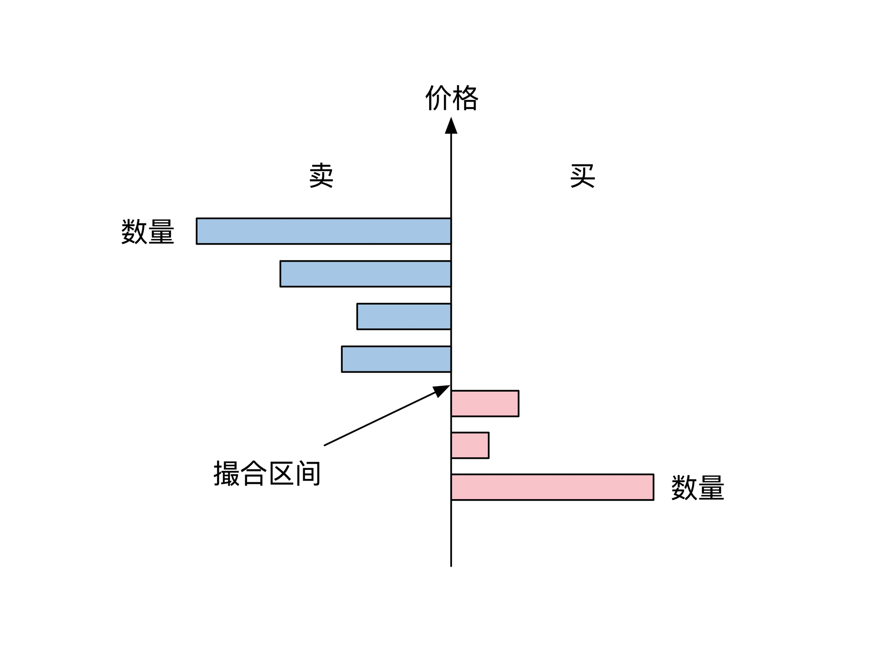
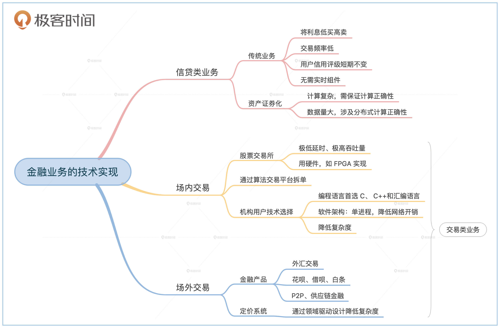

- 00 开篇词 如何成为金融级人才？.md.html
- 01 业务初探：扫了二维码之后发生了什么？.md.html
- 02 原理解读：如何理解第三方支付的业务逻辑和系统组件？.md.html
- 03 产品大观：不同金融业务都有哪些技术实现要点？.md.html
- 04 领域驱动设计（上）：如何设计金融软件顶层架构？.md.html
- 05 领域驱动设计（下）：如何设计统一的金融业务模型？.md.html
- 06 计算输入的正确性：怎么选择正确时间的数据？.md.html
- 07 计算过程的正确性：如何设计正确的数据处理架构？.md.html
- 08 计算结果的正确性：怎么保证计算结果是正确的？.md.html
- 09 数据传输的质量：金融业务对数据传输有什么要求？.md.html
- 10 数据存储的合理性：金融业务可以不用关系型数据库吗？.md.html
- 11 系统优化：如何让金融系统运行得更快？.md.html
- 12 正确性分级（上）：单机无备份有哪几种不同的一致性？.md.html
- 13 正确性分级（中）：多机无容灾有哪几种不同的一致性实现？.md.html
- 14 正确性分级（下）：多机有容灾有哪几种不同的一致性？.md.html
- 15 分布式正确性的存在性（上）：什么情况下不存在分布式共识算法？.md.html
- 16 分布式一致性（下）：怎么理解最简单的分布式一致性算法？.md.html
- 17 正确性案例（上）：如何实现分布式的事件溯源架构？.md.html
- 18 正确性案例（中）：常见分布式数据方案的设计原理是什么？.md.html
- 19 正确性案例（下）：如何在运行时进行数据系统的动态分库？.md.html
- 20 容灾（上）如何实现正确的跨机房实时容灾？.md.html
- 21 容灾（下）：如何通过混沌工程提高系统稳定性？.md.html
- 春节策划第1期 分布式金融系统知识，你掌握了多少？.md.html
- 春节策划第2期 读书如抽丝，为你推荐一些我读过的好书.md.html
- 春节策划第3期 如何运用架构知识解读春运买票和手游案例？.md.html
- 答疑集锦（一） 思考题解析与外汇架构知识拓展.md.html
- 答疑集锦（三） 思考题解析与数据库底层实现.md.html
- 答疑集锦（二） 思考题解析与账务系统优化.md.html
- 结束语 金融之道，与你同行，虽远尤欣.md.html
- 捐赠
03 产品大观：不同金融业务都有哪些技术实现要点？
你好，我是任杰。这节课我和你聊一聊不同的金融业务都有哪些技术实现要点。
和前两节课一样，在聊技术之前我们先聊一聊业务。提到金融，你可能第一个想到的是金融行业很赚钱。金融行业赚钱的方法有很多种，但是最核心的原理只有一个，那就是利用信息不对称赚钱。
信息有很多不对称的方式，用到的系统工具也都不一样。所以接下来我会带你了解常见的金融业务以及它们需要的技术，你了解了这些典型案例之后，无论再碰到多困难的金融问题，都能做到胸有成竹，游刃有余了。
信贷类业务
传统信贷业务
我们先来说一说最常见的信贷类金融业务。信贷业务俗称放贷，传统的银行主要从事的就是这个业务。信贷类业务的表现形式有很多，比如有面向企业的贷款，或者给你的房贷，以及P2P、花呗、借呗、白条等等。
那信贷类业务利用了哪些信息不对称来挣钱呢？
比如说你的公司需要一大笔临时贷款来买原材料，但是资金量太大，找不到人借给你。但是世界上可能有一位有钱人，他手上有一大笔钱，却一直都贷不出去，没有办法增值。
这时候银行作为中介机构就站了出来。有钱人把手上的钱用低的利息存进银行，银行马上转手把钱用高的利息贷款给你。通过将利息低买高卖，银行就能“躺着赚钱”了。下面这幅图展示了银行通过信贷业务赚钱的过程：

你应该知道贷款是有可能出现违约的。一旦违约，银行亏的就不仅仅是利息，还包括所有本金。违约表示银行对还款人的个人或者公司信息了解还不全面，也是一种信息不对称。
银行需要解决这个信息不对称问题来防止亏欠。毕竟不亏钱就是赚钱。所以传统银行需要通过收集数据来评价借款人的还款能力，也就是借款人的信用评级。很长时间以来，银行的信用评级过程主要还是依靠信贷员对借款方的熟悉程度。
所以，这种传统银行信贷业务买卖利息的操作，其实对信息系统的要求不高。它只要求结果正确，对时间和吞吐量都没有什么要求，信息技术并不是传统信贷业务的核心竞争力。
不过这一点因为互联网和大数据的出现而发生了改变。有了互联网和大数据，银行就能快速全面而且低成本地了解借款方的情况。你平时在电商网站上的各种消费，玩游戏时充的点券，以及出行旅游的地点和酒店级别，都可以用来描述你的还款能力。
这时候信贷行业的核心竞争力变成了怎么才能更好地收集和处理数据。这就是大数据能发挥价值的地方。
对于系统架构来说，信贷业务的特点是交易频率低，而且用户评级在短时间内不会发生大的变化，因此整个系统架构不需要实时组件，常用的批处理、大数据处理框架都能很好地发挥作用。
当然了，如果你想要提高用户体验，给用户一种实时放款的感觉，系统可以提前算好用户的信用评级。你经常见到的各种信用分就是这个提前计算的结果。
次贷危机后的信贷业务
你有没有想过，你的银行定息存折是可以抵押给银行，然后再贷款的呢？这个过程就是资产证券化。
2008年发生的次贷危机就是用个人的房贷来抵押贷款。简单的抵押赚不了多少钱，所以有一些聪明人把一大堆房贷打个大包，然后按照信用评级拆分成几个小包。类似的小包还可以堆在一起，然后再继续拆分。最后再将拆分好的小包卖给投资人。
这时候奇迹出现了，如果按照数学公式来计算，房贷总量虽然没变，但是分分拆拆之后总价值反而增加了很多，这样金融公司就能躺着赚钱了。下面这幅图是次贷将资产打包拆分的示意图：

现在常见的P2P、花呗、借呗和白条等，背后大多都是这种资本运作方式，只不过它们将资产证券化的资产从房贷换成了个人消费贷。那这种资产证券化的金融业务，对信息系统有什么要求呢？
这里我们需要了解一些必需的金融数学原理。我们在前面提到过贷款可能违约，这个违约的大小是用信用评级来衡量的。所以违约率其实是一个数学上的概率。把不同资产放在一起，打包后再拆分的过程，从数学上来看就是用一组随机变量生成一个新的随机变量。
你应该听过次贷危机产生的原因其实是区域性的房贷违约，这意味着从概率上来讲房贷违约率之间有很强的相关性。这些相关性让最后生成的新随机变量的计算公式变得非常复杂。
这意味着资产证券化的定价过程对系统有两个挑战。
一个挑战是计算复杂。数学公式有可能一页纸都写不下，那么开发人员怎么正确实现就是一个很困难的问题。就算你觉得自己实现的是正确的，那你又怎么证明呢？我们会在第二个模块“系统的正确性保障”里给你详细讲讲如何保证计算的正确性，这里你先有个印象就行。
另一个挑战是数据量大。资产证券化到一定程度之后就算不出来数学公式了，只能通过暴力求解的方式来穷举所有可能的场景。这可能是一个天文数字，所以需要成千上万台机器同时计算才能及时算出来。这就涉及到如何保证分布式计算的正确性。我们在第三个模块“分布式正确性及高可用”中还会详细展开。
交易类业务
前面讲的信贷类业务，主要还是由传统银行来完成，对信息技术的应用比较有限。金融行业也是有很多高科技的，它们主要体现在投资银行和其他新兴金融机构身上。它们多半从事着另一个大的业务，也就是交易类业务。
交易类业务其实是一个非常巨大的隐形的金融市场，一般人很难了解全貌。那我们就来看看典型的交易类业务都有哪些。
场内交易
我们先来看看最常见的交易类业务。就算你没有买过股票，也应该听过股票交易所这个金融机构。在交易所内的交易叫作场内交易，交易的场所就是交易所。
交易所角度
很多企业家定义自己是否成功，就是看公司能不能上市。上市指这家公司的股票可以在股票交易所内交易。稍微学术一点来说，上市就是股票在二级市场交易。
既然有二级市场，那么肯定还有一个一级市场。一级市场其实就是公司股东之间的私下交易。
一级市场的信息不对称主要体现在如何匹配大额股票的买家和卖家。投资银行解决信息不对称的方式是通过公司和自己的人脉来撮合买卖双方。由于解决方案是靠人而不是靠技术，所以这一阶段对信息系统要求不高。
就算投资银行撮合了一级市场的买卖双方，依然还有信息不对称的情况，那就是股票的真正价值是多少？
你学过金融理论的话就会知道，公开交易市场能发现合理的价格信息。所以为了解决价格信息不对称的问题，投资银行会帮助客户公司将股票在流动性高的二级市场上销售。由于二级市场是个公开市场，靠大量的交易来解决价格信息不对称问题，而不是靠人脉关系。这时候就对信息系统有很高的要求。
信息沟通得越快，就越能发现资产的合理价格。所以股票交易强调交易的速度，也就是系统延时。对开发人员来说，股票交易所是一个秒杀系统。只不过和电商秒杀的区别在于股票交易所每时每刻都在秒杀。所以股票交易所需要有一个极低延时、极高吞吐量的系统架构。
交易所技术
你如果参与过互联网应用的开发的话，应该了解很多互联网行业用来对付高流量的解决方案，比如分库分表、缓存、最终一致性等等。遗憾的是，这些互联网方案都是靠牺牲延时来换取流量。对于股票交易所来说，高延时是完全不可以接受的。
从事过开发工作的人都知道软件处理很难实现微秒级延时，就算达到这个延时了系统吞吐量也上不去。但是股票交易所确确实实既有低延时，又有高吞吐量。那它是怎么做到的呢？
答案很简单，就是用硬件，比如用FPGA来实现。理论上硬件能实现和所有软件一样的功能，但是硬件研发成本高，而且非常耗时。股票交易所恰好不怕这些问题。交易所别的没有，就是钱多，所以只要投资回报比足够，再多的钱都能拿出来。而研发时间久在交易所里问题也不大，主要是因为交易所业务逻辑非常简单。
交易所的主要功能是撮合买方和卖方。交易所在系统内维护了还没有成交的卖方订单和买方订单。当一个新的订单进来的时候，交易所会查看能不能成交。如果不能成交就等待下一笔订单。这个撮合逻辑非常简单直白，示意图如下：

交易所用户角度
股票上市之后依然存在信息不对称的问题。有一些金融机构会故意增加信息不对称，而另一些金融机构则在努力发现和消除这些信息不对称。那背后又有哪些故事呢？
如果你和我一样是个股票小散户的话，在股市上是掀不起多大风浪的。但是如果你掌管了一家大型机构，机构里每次买卖都是上亿的资金，那很有可能会影响到市场价格。而且通常是负面影响，也就是说会让你买得更贵，或者卖得更便宜。那怎样才能避免这种情况呢？
这时候，投资银行或者券商会给你提供一个拆单的服务。他们会将你的大订单拆成很多小订单，并且选择在不同的时间发送到股票交易所，这样就不会产生剧烈的市场波动。这意味着投资银行需要有一个算法交易平台。这个平台需要实时对市场数据进行分析，用算法来拆解和执行订单。
拆单服务的本质是造成信息不对称。一般用户无法获取你正在大量交易股票这个信息。前面提到过，金融机构是靠信息不对称赚钱。既然投资银行赚钱的方式是通过信息技术来造成信息不对称，那么有没有可能通过消除这些信息不对称来赚钱呢？
做高频交易的对冲基金就是一类通过发现和消除信息不对称来赚钱的金融机构。他们的核心竞争力就是极低的系统延时。当延时高的时候，股票体现的是宏观规律，比如你会看公司的基本面，或者猜是不是庄家在出货。但是当延时低的时候，股票体现的是统计规律。
比如前面提到的将股票拆单的操作。如果你发现了一个小的买单，那么接下来很有可能会有很多小的买单。如果你系统的延时足够低，就可以挤在这些小单的前面买入，然后马上卖出，从而通过超短线操作获利。所以高频交易系统里也有算法交易平台。这个平台也需要以极低的延时来分析实时市场数据，并且也要以极低的延时来执行订单。
讲到这里你会发现，交易所的机构和用户之间互相在玩猫鼠游戏，谁的系统速度快，谁就更有可能发现赚钱的先机。所以交易所相关的金融机构对系统要求非常高，一些极其领先的软硬件技术在这里都能找到身影，这也是为什么大型金融机构都说自己是高科技公司。
交易所用户技术
交易所用户都很关心系统延时。那么延时究竟需要有多低呢？一般来说，机构用户要求系统的消息处理时间在毫秒和微秒之间（1/1000～1/1000000秒）。那这么低的延时会怎么影响系统架构呢？
首先影响的是编程语言的选择。一般来说C是首选，核心代码用汇编语言实现。要求不高的地方用C++也可以。至于互联网常见的编程语言，比如Java、Go、Python、JavaScript等，都不适合。
其次影响了软件架构，这也是金融软件和互联网软件架构的最大不同。
互联网软件通常会使用SOA或微服务架构。这种架构导致业务的调用链很长，每次调用都有网络延时。
交易所用户架构则完全相反。系统会用单个进程来完成所有的事情，最好不要有网络开销。如果交易所允许，金融公司还会出钱将机器放在交易所的机房内。这样就能进一步缩短光的传输距离，节省宝贵的数据传输时间。
当然了，由于种种原因，目前国内的交易所和券商在信息技术这一块还没有毫秒级以下的需求。但是随着金融系统的逐步开放，外资金融机构会带着这些成熟的技术来和我们竞争。软件技术的成熟需要一定的时间积累，我们需要做到笨鸟先飞，提前做好技术布局。
场外交易
股票市场和其它的场内交易只是金融市场的冰山一角。绝大部分的金融交易都发生在交易所外，也叫场外交易。
金融产品
场外交易的金融产品类型非常广。如果你想私下交易股票，这个行为也属于场外交易。外汇交易虽然和股票市场类似，但是外汇交易没有交易所，也属于场外交易。你平时听过的花呗、借呗、白条、P2P、供应链金融等，一旦它们被资产证券化，也属于场外交易。那这些场外交易产品，它们对于信息系统又有什么要求呢？
合同定价与市场风险计算
前面提到过，交易所的一个功能是发现价格。人们通过在公开市场交易来消除价格信息的不对称。那场外交易没有交易所，又该怎么发现价格呢？
既然你在场外交易的时候没法被动地发现价格，那么就只能主动发现价格了。所以对于场外交易的金融产品来说，你需要独立计算出合同的价格。
前面学习资产证券化的定价过程时，我和你说过，定价系统需要处理复杂度和数据量的问题，这一点也是对所有场外交易定价系统的要求。但资产证券化只是一种场外交易的金融产品，金融行业还有很多其它的金融产品，不同的产品定价方式完全不一样，那时间长了怎么解决定价系统数量多的问题呢？
幸运的是，所有场外交易的金融产品都存在共性，比如说它们肯定都跟钱有关。这些共性可以进一步提炼出来，从而有希望搭建一个金融产品的统一定价平台。这个抽象总结的方法就是领域驱动设计，我会在第4、第5节课里给你详细解读。
小结
这节课我给你讲了不同的金融业务都有哪些技术实现要点。
传统的银行主要处理的是放贷业务，在很长一段时间不需要信息技术的帮助。但是信息技术的崛起不仅提高了用户信用评级的准确度，成本还很低。这时候的信息系统需要具备批处理计算的能力。
2008年次贷危机之后，人们学会了如何复制次贷这种金融模式，衍生出了很多信贷类的资产证券化产品。这些产品要求系统能解决复杂度和数据量的问题。
除了信贷类业务，还有一类业务是交易类业务。交易类业务可以分成场内和场外两种交易模式。
股票交易所是一种常见的场内交易模式。对于股票交易所来说，信息系统需要解决极低延时，极高吞吐量的交易问题。股票交易所的用户对速度和吞吐量也有同样的要求。但是他们彼此之间会互相竞争，需要用算法交易平台来发现彼此的赚钱机会。这对编程语言和架构的选择都带来了很大的影响。
场外交易的金融产品类型众多，因此需要用到领域驱动设计的方法论来降低定价系统的复杂度。

思考题
在上世纪中期的美国，银行的定义是吸纳存款并且发放贷款。一旦一家金融机构被定性成为了银行，就需要接受美联储监管。监管会限制金融机构的行为，因此金融机构并不一定愿意成为银行。那么，如果你是一家银行的CEO，既不想被定性成银行，又想做一些银行的事情，你准备做怎样的业务调整呢？
欢迎留言和我分享你的想法。如果学完这节课你有所收获，也欢迎你分享给你的朋友，一起交流和讨论。
© 2019 - 2023 Liangliang Lee. Powered by gin and hexo-theme-book.